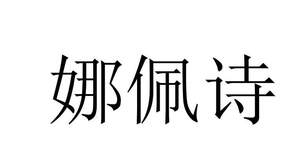

Trade Mark Journal No.2025/025 20 June 2025
UK00004214238 5 June 2025 (3,5,10,32,35)

- Class 3
- Cleansing milk for toilet purposes; Cosmetics for children; Cosmetics; Cosmetic preparations for skin care; Toiletry preparations; Beauty masks; Sunscreen preparations; Dentifrices; Serums for cosmetic purposes; Cosmetic pencils; Double eyelid tapes; Breath freshening sprays; Perfumes; Lipsticks; Hair conditioners; Hair dyes; Skin whitening creams; Mascara; Essential oils; Perfumery.
- Class 5
- Vitamin preparations; Dietary fibre; Dietetic substances adapted for medical use; Dietetic foods adapted for medical purposes; Dietetic beverages adapted for medical purposes; Medicated sweets; Food for babies; Mineral dietary supplements; Nutritional supplements; Enzyme dietary supplements; Lecithin dietary supplements; Protein dietary supplements; Royal jelly dietary supplements; Powdered milk for babies; Probiotic supplements; Collagen for medical purposes; Herbal teas for medicinal purposes; Liquorice for pharmaceutical purposes; Slimming pills; Sugar for medical purposes.
- Class 10
- Testing apparatus for medical purposes; Massage apparatus for eyes; Dental apparatus and instruments; Medical apparatus and instruments; Esthetic massage apparatus; Facial aesthetic treatment apparatus using ultrasonic waves; Orthopedic articles; Fumigation apparatus for medical purposes; Apparatus for use in medical analysis; Medical masks; Cooling patches for medical purposes; Cushions for medical purposes; Bracelets for medical purposes; Air pillows for medical purposes; Water bags for medical purposes; Electric esthetic massage apparatus for household purposes; LED facial aesthetic treatment apparatus; Electric facial aesthetic treatment apparatus, other than facial steamers; Medical analysis instruments.
- Class 32
- Protein-enriched sports beverages; Non-alcoholic fruit extracts; Non-alcoholic beverages; Vegetable-based beverages; Energy drinks; Vegetable juices [beverage]; Powders for making soft drinks; Non-alcoholic fruit juice beverages; Fruit nectars; Smoothies; Kvass; Seltzer water; Mineral water [beverages]; Rice-based beverages, other than milk substitutes; Soda water; Soft drinks; Beer; De-alcoholized beer; Extracts for making non-alcoholic beverages.
- Class 35
- Online retail services relating to cosmetics; Advertising; Advertising services to create brand identity for others; Sales promotion for others; Consumer profiling for commercial or marketing purposes; Provision of an online marketplace for buyers and sellers of goods and services; Presentation of goods on communication media, for retail purposes; Professional business consultancy; Arranging and conducting of commercial events; Sponsorship search; Commercial or industrial management assistance; Commercial administration of the licensing of the goods and services of others; Organization of exhibitions for commercial or advertising purposes; Retail services for pharmaceutical, veterinary and sanitary preparations and medical supplies; Online advertising on a computer network; Import-export agency services; Providing business information via a website; Wholesale services for pharmaceutical, veterinary and sanitary preparations and medical supplies.
WU LIN BIO TECH CO.，LIMITED
Representative: Jianzo ZANE